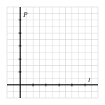

¿Qué roles juegan los parámetros \(a\text{,}\)\(k\text{,}\) y \(c\) en cómo la función \(F(t) = c + ae^{-kt}\) modela la temperatura de un objeto que se está enfriando o calentando en su entorno?
¿Cómo podemos usar una función exponencial para modelar de manera más realista una población cuyo crecimiento se nivela?
Hemos visto que las funciones exponenciales pueden usarse para modelar varios fenómenos importantes, como el crecimiento del dinero debido a intereses compuestos continuamente, la desintegración de cantidades radiactivas y la temperatura de un objeto que se está enfriando o calentando debido a su entorno. A partir del trabajo inicial con funciones de la forma \(f(t) = ab^t\) donde \(b \gt 0\) y \(b \ne 1\text{,}\) encontramos que las funciones exponenciales desplazadas de la forma \(g(t) = ab^t + c\) también son importantes. Además, la base especial \(e\) nos permite representar todas estas funciones a través de la escala horizontal escribiendo
donde \(k\) es la constante tal que \(e^k = b\text{.}\) Las funciones de la forma de Equation (3.6.1) son siempre crecientes o siempre decrecientes, siempre tienen la misma concavidad, están definidas en el conjunto de todos los números reales y tienen su rango como el conjunto de todos los números reales mayores que \(c\) o todos los números reales menores que \(c\text{.}\) En cualquier contexto en el que estemos usando un modelo de esta forma, la tarea crucial es identificar los valores de \(a\text{,}\)\(k\text{,}\) y \(c\text{;}\) ese esfuerzo es el enfoque de esta sección.
También hemos comenzado a ver el papel importante que juegan los logaritmos en el trabajo con modelos exponenciales. El logaritmo natural es el inverso de la función exponencial natural y satisface la regla importante de que \(\ln(b^k) = k\ln (b)\text{.}\) Esta regla nos permite resolver ecuaciones con la estructura \(a^k = b\) para \(k\) en el contexto donde \(a\) y \(b\) son conocidos pero \(k\) no lo es. De hecho, primero podemos tomar el logaritmo natural de ambos lados de la ecuación para obtener
de lo cual se sigue que \(k \ln(a) = \ln(b)\text{,}\) y por lo tanto
\begin{equation*}
k = \frac{\ln(b)}{\ln(a)}\text{.}
\end{equation*}
Encontrar \(k\) es a menudo central para determinar un modelo exponencial, y los logaritmos hacen posible encontrar el valor exacto de \(k\text{.}\)
En Preview Activity 3.6.1, revisamos algunas ideas algebraicas clave con ecuaciones exponenciales y logarítmicas en preparación para usar estos conceptos en modelos de temperatura y población.
Preview Activity3.6.1.
En cada una de las siguientes situaciones, determina el valor exacto de la cantidad desconocida que se identifica.
La temperatura de un objeto que se calienta en un horno está dada por \(F(t) = 275 - 203e^{-kt}\text{,}\) y sabemos que la temperatura del objeto después de \(20\) minutos es \(F(20) = 101\text{.}\) Determina el valor exacto de \(k\text{.}\)
La temperatura de un objeto que se enfría en un refrigerador está modelada por \(F(t) = a + 37.4e^{-0.05t}\text{,}\) y la temperatura del refrigerador es \(39.8^\circ\text{.}\) Pensando en el comportamiento a largo plazo de \(e^{-0.05t}\) y el comportamiento a largo plazo de la temperatura del objeto, determina el valor exacto de \(a\text{.}\)
Más adelante en esta sección, aprenderemos que un modelo para cómo una población crece con el tiempo puede estar dado por una función de la forma
Supón que \(y = a + be^{-kt}\text{.}\) Resuelve para \(t\) en términos de \(a\text{,}\)\(b\text{,}\)\(k\text{,}\) y \(y\text{.}\) ¿Qué representa esta nueva ecuación?
Subsection3.6.1La Ley de Enfriamiento de Newton revisitada
En Sección 3.2, aprendimos que la Ley de Enfriamiento de Newton, que establece que la temperatura de un objeto cambia a una tasa proporcional a la diferencia entre su propia temperatura y la temperatura del entorno, resulta en que la temperatura del objeto se modele mediante funciones de la forma \(F(t) = ab^t + c\text{.}\) A la luz de nuestro trabajo posterior en Sección 3.3 con la base natural \(e\text{,}\) así como el hecho de que \(0 \lt b \lt 1\) en este modelo, sabemos que la Ley de Enfriamiento de Newton implica que la temperatura del objeto se modela mediante una función de la forma
para algunas constantes \(a\text{,}\)\(c\) y \(k\text{,}\) donde \(k \gt 0\text{.}\)
De Ecuación (3.6.3), podemos determinar varias características diferentes de cómo las constantes \(a\text{,}\)\(b\) y \(k\) están conectadas al comportamiento de \(F\) pensando en lo que sucede en \(t = 0\text{,}\) en un valor adicional de \(t\) y a medida que \(t\) aumenta sin límite. En particular, nota que \(e^{-kt}\) tenderá a \(0\) a medida que \(t\) aumenta sin límite.
Modelando la temperatura con la Ley de Enfriamiento de Newton.
Para la función \(F(t) = ae^{-kt} + c\) que modela la temperatura de un objeto que se enfría o calienta, las constantes \(a\text{,}\)\(c\) y \(k\) juegan los siguientes roles. Nota que \(k \gt 0\text{.}\)
Dado que \(e^{-kt}\) tiende a \(0\) a medida que \(t\) aumenta sin límite, \(F(t)\) tiende a \(c\) a medida que \(t\) aumenta sin límite, y por lo tanto \(c\) representa la temperatura del entorno del objeto.
Dado que \(e^0 = 1\text{,}\)\(F(0) = a + c\text{,}\) y por lo tanto la temperatura inicial del objeto es \(a + c\text{.}\) Dicho de otra manera, \(a\) es la diferencia entre la temperatura inicial del objeto y la temperatura del entorno.
Una vez que conocemos los valores de \(a\) y \(c\text{,}\) el valor de \(k\) se determina conociendo el valor de la función de temperatura \(F(t)\) en un valor no nulo de \(t\text{.}\)
Activity3.6.2.
Una lata de refresco está inicialmente a temperatura ambiente, \(72.3^\circ\) Fahrenheit, y en el momento \(t = 0\) se coloca en un refrigerador ajustado a \(37.7^\circ\text{.}\) Además, sabemos que después de \(30\) minutos, la temperatura del refresco ha bajado a \(59.5^\circ\text{.}\) Deja que \(F(t)\) represente la temperatura del refresco en grados Fahrenheit en el momento \(t\) en minutos.
Usa el razonamiento algebraico y tu comprensión de la situación física para determinar los valores exactos de \(a\text{,}\)\(c\text{,}\) y \(k\) en el modelo \(F(t) = ae^{-kt}+c\text{.}\) Escribe al menos una oración cuidadosa para explicar tu pensamiento.
Determina el tiempo exacto en que la temperatura del objeto es \(42.4^\circ\text{.}\) Muestra claramente tu trabajo y pensamiento algebraico.
En Desmos, ingresa los valores que encontraste para \(a\text{,}\)\(c\) y \(k\) para definir la función \(F\text{.}\) Luego, usa Desmos para encontrar la tasa promedio de cambio de \(F\) en el intervalo \([25,30]\text{.}\) ¿Cuál es el significado (con unidades) de este valor?
Si todo se mantuviera igual excepto el valor de \(F(0)\text{,}\) y en su lugar \(F(0) = 65\text{,}\) ¿sería el valor de \(k\) mayor o menor? ¿Por qué?
Subsection3.6.2Un modelo más realista para el crecimiento de la población
Si asumimos que una población crece a una tasa que es proporcional al tamaño de la población, se sigue que la población crece exponencialmente según el modelo
\begin{equation*}
P(t) = Ae^{kt}
\end{equation*}
donde \(A\) es la población inicial y \(k\) está ligado a la tasa a la que crece la población. Dado que \(k \gt 0\text{,}\) sabemos que \(e^{kt}\) es una función siempre creciente y siempre cóncava hacia arriba que crece sin límite. Aunque \(P(t) = Ae^{kt}\) puede ser un modelo razonable para cómo crece una población cuando es relativamente pequeña, debido a que la función crece sin límite a medida que el tiempo aumenta, no puede ser una representación realista a largo plazo de lo que ocurre en la realidad. De hecho, ya sea el número de peces que pueden sobrevivir en un lago, el número de células en una placa de Petri, o el número de seres humanos en la tierra, el tamaño del entorno y las limitaciones de recursos impedirán que la población pueda crecer sin límite.
A la luz de estas observaciones, se necesita un modelo diferente para la población, uno que crezca exponencialmente al principio, pero que se estabilice más tarde. El cálculo puede usarse para desarrollar dicho modelo, y la función resultante se llama usualmente la función logística, que tiene la forma
donde \(A\text{,}\)\(M\text{,}\) y \(k\) son constantes positivas. Dado que \(k \gt 0\text{,}\) se sigue que \(e^{-kt} \to 0\) a medida que \(t\) aumenta sin límite, y así el denominador de \(P\) se aproxima a \(1\) a medida que pasa el tiempo. Así, observamos que \(P(t)\) tiende a \(A\) a medida que \(t\) aumenta sin límite. A veces nos referimos a \(A\) como la capacidad de carga de la población.
Activity3.6.3.
En Desmos, define \(P(t) = \frac{A}{1 + Me^{-kt}}\) y acepta deslizadores para \(A\text{,}\)\(M\text{,}\) y \(k\text{.}\) Establece los rangos de los deslizadores para estos parámetros de la siguiente manera: \(0.01 \le A \le 10\text{;}\)\(0.01 \le M \le 10\text{;}\)\(0.01 \le k \le 5\text{.}\)
Dibuja un gráfico típico de \(P(t)\) en los ejes proporcionados y escribe varias oraciones para explicar los efectos de \(A\text{,}\)\(M\text{,}\) y \(k\) en el gráfico de \(P\text{.}\)

Figure3.6.1.Ejes para trazar una función logística típica \(P\text{.}\)
En un gráfico logístico típico, ¿dónde parece que la población está creciendo más rápidamente? ¿Cómo se conecta este valor con la capacidad de carga, \(A\text{?}\)
¿Cómo se comporta la función \(1 + Me^{-kt}\) a medida que \(t\) disminuye sin límite? ¿Cuál es la razón algebraica de que esto ocurra?
Usa tu hoja de trabajo de Desmos para encontrar una función logística \(P\) que tenga las siguientes propiedades: \(P(0) = 2\text{,}\)\(P(2) = 4\text{,}\) y \(P(t)\) se aproxima a \(9\) a medida que \(t\) aumenta sin límite. ¿Cuáles son los valores aproximados de \(A\text{,}\)\(M\text{,}\) y \(k\) que hacen que la función \(P\) cumpla con estos criterios?
Activity3.6.4.
Supón que una población de animales (medida en miles) que vive en una isla crece según el modelo logístico, donde \(t\) se mide en años. Sabemos la siguiente información: \(P(0) = 2.45\text{,}\)\(P(3) = 4.52\text{,}\) y a medida que \(t\) aumenta sin límite, \(P(t)\) se aproxima a \(11.7\text{.}\)
Determina los valores exactos de \(A\text{,}\)\(M\text{,}\) y \(k\) en el modelo logístico
Muestra claramente tu trabajo algebraico y tu razonamiento.
Traza tu modelo de (a) y verifica que sus valores coincidan con las características deseadas. Luego, calcula la tasa promedio de cambio de \(P\) en los intervalos \([0,2]\text{,}\)\([2,4]\text{,}\)\([4,6]\text{,}\) y \([6,8]\text{.}\) ¿Cuál es el significado (con unidades) de los valores que has encontrado? ¿Cómo está creciendo la población en estos intervalos?
Encuentra el valor exacto del tiempo cuando la población será de \(10\) (mil). Muestra tu trabajo algebraico y tu razonamiento.
Subsection3.6.3Resumen
Cuando una función de la forma \(F(t) = c + ae^{-kt}\) modela la temperatura de un objeto que se está enfriando o calentando en su entorno, la temperatura del entorno es \(c\) porque \(e^{-kt} \to 0\) a medida que pasa el tiempo, la temperatura inicial del objeto es \(a+c\text{,}\) y la constante \(k\) está conectada a qué tan rápido cambia la temperatura del objeto. Una vez que \(a\) y \(c\) son conocidos, la constante \(k\) puede determinarse conociendo la temperatura en un momento adicional, \(t\text{.}\)
Dado que la función exponencial \(P(t) = Ae^{kt}\) crece sin límite a medida que \(t\) aumenta, tal función no es un modelo realista de una población que esperamos que se estabilice a medida que pasa el tiempo. La función logística
modela más apropiadamente una población que crece aproximadamente de manera exponencial cuando \(P\) es pequeña pero cuyo tamaño se estabiliza a medida que se aproxima a la capacidad de carga del entorno, que es el valor de la constante \(A\text{.}\)
Exercises3.6.4Exercises
1.
Newton’s law of cooling states that the temperature of an object changes at a rate proportional to the difference between its temperature and that of its surroundings. Suppose that the temperature of a cup of coffee obeys Newton’s law of cooling. If the coffee has a temperature of \(210\) degrees Fahrenheit when freshly poured, and \(1.5\) minutes later has cooled to \(195\) degrees in a room at \(78\) degrees, determine when the coffee reaches a temperature of \(155\) degrees.
The coffee will reach a temperature of \(155\) degrees in minutes.
2.
The total number of people infected with a virus often grows like a logistic curve. Suppose that 25 people originally have the virus, and that in the early stages of the virus (with time, \(t\text{,}\) measured in weeks), the number of people infected is increasing exponentially with \(k=1.8\text{.}\) It is estimated that, in the long run, approximately 7250 people become infected.
(a) Use this information to find a logistic function to model this situation.
\(P =\)
(b) Sketch a graph of your answer to part (a). Use your graph to estimate the length of time until the rate at which people are becoming infected starts to decrease. What is the vertical coordinate at this point?
vertical coordinate =
In Exercise 3.6.4.3 below, use the following structure/formula for \(N(t)\text{:}\)\(N(t)=\frac{L}{1+Ab^{-kt}}\text{.}\) In particular, note that when the instructions say “find \(A\)”, this use of “\(A\)” is not in reference to carrying capacity.
3.
The town of Sickville, with a population of 9310 is exposed to the Blue Moon Virus, against which there is no immunity. The number of people infected when the virus is detected is 30. Suppose the number of infections grows logistically, with \(k = 0.18\text{.}\)
Find \(A\text{.}\)
Find the formula for the number of people infected after \(t\) days.
\(N(t) =\)
Find the number of people infected after 30 days.
4.
A glass filled with ice and water is set on a table in a climate-controlled room with constant temperature of \(71^\circ\) Fahrenheit. A temperature probe is placed in the glass, and we find that the following temperatures are recorded (at time \(t\) in minutes).
\(t\)
\(0\)
\(20\)
\(F(t)\)
\(34.2\)
\(41.7\)
Make a rough sketch of how you think the temperature graph should appear. Is the temperature function always increasing? always decreasing? always concave up? always concave down? what’s its long-range behavior?
By describing \(F\) as a transformation of \(e^t\text{,}\) explain why a function of form \(F(t) = c - ae^{-kt}\text{,}\) where \(a\text{,}\)\(c\text{,}\) and \(k\) are positive constants is an appropriate model for how we expect the temperature function to behave.
Use the given information to determine the exact values of \(a\text{,}\)\(c\text{,}\) and \(k\) in the model \(F(t) = c - ae^{-kt}\text{.}\)
Determine the exact time when the water’s temperature is \(60^\circ\text{.}\)
5.
A popular cruise ship sets sail in the Gulf of Mexico with \(5000\) passengers and crew on board. Unfortunately, a five family members who board the ship are carrying a highly contagious virus. After interacting with many other passengers in the first few hours of the cruise, all five of them get very sick.
Let \(S(t)\) be the number of people who have acquired the virus \(t\) days after the ship has left port. It turns out that a logistic function is a good model for \(S\text{,}\) and thus we assume that
for some positive constants \(A\text{,}\)\(M\text{,}\) and \(k\text{.}\) Suppose that after \(1\) day, \(20\) people have gotten the virus.
Recall we know that \(S(0) = 5\) and \(S(1) = 20\text{.}\) In addition, assume that \(5000\) is the number of people who will eventually get sick. Use this information determine the exact values of \(A\text{,}\)\(M\text{,}\) and \(k\) in the logistic model.
How many days will it take for \(4000\) of the people on the cruise ship to have acquired the virus?
Compute the average rate of change of \(S\) on the intervals \([1,2]\text{,}\)\([3,4]\text{,}\) and \([5,7]\text{.}\) What is the meaning of each of these values (with units) in the context of the question, and what trend(s) do you observe in these average rates of change?
6.
A closed tank with an inflow and outflow contains a \(100\) liters of saltwater solution. Let the amount of salt in the tank at time \(t\) (in minutes) be given by the function \(A(t)\text{,}\) whose output is measured in grams. At time \(t = 0\) there is an initial amount of salt present in the tank, and the inflow line also carries a saltwater mixture to the tank at a fixed rate; the outflow occurs at the same rate and carries a perfectly mixed solution out of the tank. Because of these conditions, the volume of solution in the tank stays fixed over time, but the amount of salt possibly changes.
It turns out that the problem of determining the amount of salt in the tank at time \(t\) is similar to the problem of determining the temperature of a warming or cooling object, and that the function \(A(t)\) has form
\begin{equation*}
A(t) = ae^{-kt} + c
\end{equation*}
for constants \(a\text{,}\)\(c\text{,}\) and \(k\text{.}\) Suppose that for a particular set of conditions, we know that
Again, \(A(t)\) measures the amount of salt in the tank after \(t\) minutes.
How much salt is in the tank initially?
In the long run, how much salt do we expect to eventually be in the tank?
At what exact time are there exactly \(500\) grams of salt present in the tank?
Can you determine the concentration of the solution that is being delivered by the inflow to the tank? If yes, explain why and determine this value. If not, explain why that information cannot be found without additional data.